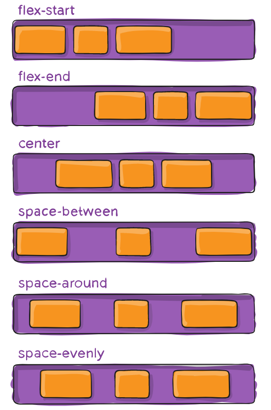

TEMA 1
FLEX-BASIS
Establece el tamaño estandar de un elemento antes de que se distribuya el espacio del contenedor. Puede ser Puede ser un largo (por ejemplo, 20%, 5rem, etc.) o una palabra clave.
La palabra clave auto significa "observe mis propiedades de altura o ancho" (lo que era hecho por la palabra clave t main-size, que fue depreciada). La palabra clave content significa "establezca el tamaño según el contenido interno del ítem";
esta palabra clave aún no tiene mucho soporte, por lo que no es fácil de probar, al igual que sus relacionadas: max-content, min-content y fit-content .flex-item { flex-basis: flex-basis: | auto; */\* el valor estándar es auto \*/* }
Con el valor 0, el espacio adicional alrededor del contenido no se considera. Con el valor de auto, el espacio adicional se distribuye con base en el valor de flex-grox del ítem.
FLEX-FLOW
La propiedad flex-flow es una propiedad shorthand (una misma declaración incluye varios valores relacionados con más de una propiedad) que incluye flex direction y flex-wrap. Determina cuáles serán los ejes principal y transversal del contenedor. El valor estándar es row nowrap. flex-container { flex-flow: row nowrap | row wrap | column nowrap |column wrap; }
JUSTIFY-CONTENT
Imagen 3
Esta propiedad define la alineación de los ítems a lo largo del eje principal. Ayuda a distribuir el espacio libre que queda en el contenedor, ya sea que todos los flex ítems de una línea sean inflexibles o flexibles, pero ya hayan alcanzado su tamaño máximo.
También ejerce cierto control sobre la alineación de los ítems cuando sobrepasan el límite de la línea.flex-container
{ justify-content: flex-start | flex-end | center | space-between | space- around | space-evenly; }
flex-start (estándar): los ítems se alinean a lo largo del borde de inicio (start) de acuerdo con la flex-direction del contenedor. Flex-end: los ítems se alinean a lo largo del borde final (end) de acuerdo con la flex-direction del contenedor. start: los ítems se alinean a lo largo del borde de inicio de la dirección del writing-mode (modo de escritura). end: los ítems se alinean a lo largo del borde final de la dirección del writing-mode (modo de escritura). left: los ítems están alineados a lo largo del borde izquierdo del contenedor, a menos que esto no tenga sentido con el flex-direction que se está utilizando. En este caso, se comporta como start. right: los ítems están alineados a lo largo del borde derecho del contenedor, a menos que esto no tenga sentido con el flex-direction que se está utilizando. En este caso, se comporta como start. center: los ítems están centrados en la línea. Space-between: los ítems se distribuyen uniformemente a lo largo de la línea; el primer ítem al lado del borde inicial de la línea, el último ítem al lado del borde final de la línea. Space-around: los ítems se distribuyen en línea con el mismo espacio entre ellos Tenga en cuenta que visualmente el espacio puede no ser igual, ya que todos los ítems tienen la misma cantidad de espacio en ambos lados: el primer ítem solo tendrá una unidad de espacio a lo largo del borde del contenedor, pero dos unidades de espacio entre él y el siguiente ítem, porque el ítem siguiente también tiene su propio espaciamiento que se está aplicando. Space-evenly: los ítems se distribuyen de manera que el espacio entre dos elementos cualesquiera en la línea (incluso entre los ítems y los bordes) sea igual. Todas las páginas HTML contienen los mismos elementos básicos:Doctype:
Es la primera línea de código que tiene que estar en cualquier documento HTML. Esta línea indica al navegador qué especificación de HTML se está utilizando.HTML:
El par de etiquetas < html> y < /html> se encuentran al principio y al final de todo documento HTML y sirve para indicar a todos las aplicaciones que pueden analizar texto sin formato (no solamente a los navegadores) que esa página utiliza HTML.Head:
Las etiquetas < head> y < /head> delimitan el contenido de la cabecera del documento, es decir, el título de la página y una información que no aparece en la pantalla.Title:
El par de etiquetas < title> y < /title> rodea el texto del título. El título aparece en la barra de título del navegador web cuando presenta la página. Normalmente va dentro del elemento < head>.Meta:
< meta> permite aportar metainformación al documento, para su mejor identificación e indexación por los motores de búsqueda.Body:
Las etiquetas < body> y < /body> rodean el contenido visible de la página. También puede llevar incluida información sobre las propiedades de la página, por ejemplo < body bgcolor="#RRGGBB"> define el color de fondo de la página.Etiquetas HTML más Comunes
Comentarios: < !-- comentarios -->: Para escribir anotaciones que sirven para ayudar a la comprensión del código. Lo que se escribe dentro de esta etiqueta es ignorado por el navegador y no se muestra en la página. Formato de Textos< b>... < /b> : Aplica negrita al texto incluido entre las etiquetas (es equivalente usar < strong>… < /strong>)
< i>... < /i>: Aplica cursiva al texto incluido entre las etiquetas (es equivalente usar < em>… < /em>) < u> < /u>: Aplica subrayado